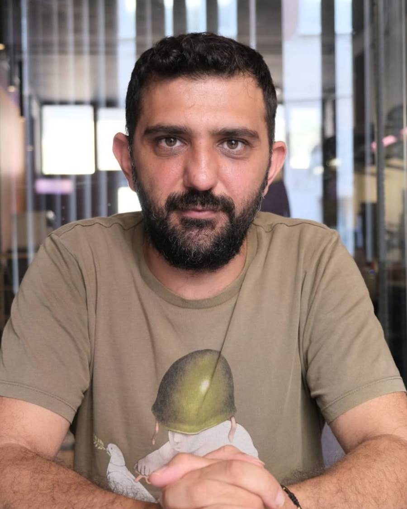
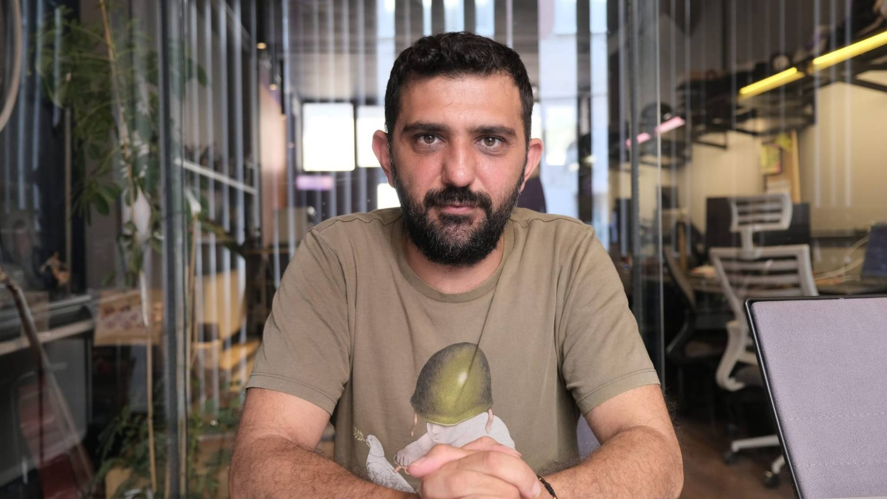

Psikolog
Mustafa Tepret
Yetişkinlerle bireysel psikoterapi: sanat psikoterapisi, varoluşçu ve psikanalitik yaklaşımlar. Yüz yüze ve online görüşmeler.
- Bireysel psikoterapi
- Yetişkinler
- Yüz yüze & Online


Hakkımda
Merhaba, ben Mustafa Tepret.
Doğuş Üniversitesi Psikoloji bölümünden yüksek onur derecesiyle mezun oldum. Şu anda Gedik Üniversitesi Klinik Psikoloji Yüksek Lisans programında tez aşamasındayım; tezimde otantiklik, kaygı ve somatizasyon arasındaki ilişkiyi inceliyorum.
Varoluşçu Akademi'deki mezuniyet tezimi “Psikanalizden varoluşçuluğa kaygı kavramı” üzerine yazdım ve bu çalışmayı “Kaygının Anlamı” başlığıyla çeşitli kurumlarda sunmaya devam ediyorum.
Yetişkinlerle; sanat psikoterapisi, varoluşçu psikoterapi ve psikanalitik psikoterapi çerçevesinde çalışıyorum. Bugüne kadar birçok sivil toplum kuruluşunda çocuklar ve yetişkinlerle gönüllü çalışmalar yürüttüm.
Eğitimlerime göz atınYaklaşımım
Çalıştığım yaklaşımlar
- No. 1
Sanat Psikoterapisi
- No. 2
Varoluşçu Psikoterapi
- No. 3
Psikanalitik Psikoterapi
Eğitim
Eğitimler
Akademik eğitim, psikoterapi eğitimleri ve gönüllü çalışmalar.
Lisans
Doğuş Üniversitesi
Psikoloji
Yüksek onur derecesi
Yüksek Lisans
Gedik Üniversitesi
Klinik Psikoloji · Tez aşamasında
Tez: “Otantiklik, Kaygı ve Somatizasyon İlişkisinin İncelenmesi”
2 yıl
Varoluşçu Akademi
Varoluşçu Psikoterapi Temel Analiz Eğitimi
Mezuniyet tezi: “Psikanalizden Varoluşçuluğa Kaygı Kavramı”
1 yıl
İstanbul Psikoterapi Okulu
Psikanalitik Psikoterapi Eğitimi
1 yıl
Prof. Dr. Hira Selma Kalkan
Sanat Terapisi Eğitimi
Gönüllü çalışmalar
Sivil toplum kuruluşları
Çeşitli sivil toplum kuruluşlarında çocuklar ve yetişkinlerle
Mesleki üyelikler
Üyelik
Türk Psikologlar Derneği
Üyelik
TODAP
Toplumsal Dayanışma İçin Psikologlar Derneği
“Her kim ki doğru şekilde kaygılanmayı öğrenir, nihai olanı öğrenir.”
Sunum
Kaygının Anlamı
Psikanalizden varoluşçuluğa
Tam olarak tarif edemediğimiz, ilaçlar alarak yenmeye çalıştığımız, hatta bazen yaşamımızı felç eden kaygı, ya öznelliğimizin kaynağını oluşturuyorsa…
Ondan kaçtıkça kendini bize dayatıyor. Çelişkilerimizle birlikte kalabilme kapasitemizle birlikte değişip şekilleniyor.
Kaygı yalnızca içimizde olup biten bir şey değil. Sartre’ın bakış dediği şey, ötekinin dünyamızı nasıl kurduğunu anlatır. Kendimizle kurduğumuz ilişki başkalarının gözü altında belirlenir; kaygımızın neye benzediğini bir yandan toplumsal ilişkilerimiz tayin eder.
Kendimize yakınlaştığımızda açığa çıkan kaygıyla kalabildiğimizde özgürlüğümüzle karşılaşırız. Varoluşumuzun temeli buradadır.
Varoluşçu Akademi mezuniyet tezime dayanan bu sunumda kaygının psikanalitik kuramdan varoluşçu düşünceye nasıl anlaşıldığını anlatıyorum. Kurum ve topluluklardan gelen sunum davetlerine açığım.
Sunum daveti için yazınYazılar
Yazılar
Yazılar çok yakında burada.
Kaygı, beden, anlam ve sanat üzerine yazılar hazırlanıyor. O zamana kadar paylaşımlarımı Instagram’da takip edebilirsiniz.
SSS
Sık sorulan sorular
Sanat terapisi için çizim yeteneğim olması gerekir mi?
Hayır. Amaç güzel bir eser üretmek değil; malzemeyle kurduğunuz ilişki ve ortaya çıkanın size düşündürdükleri.
Online seanslar nasıl işliyor?
Online seanslar Zoom üzerinden görüntülü görüşme ile yapılır. Kesintisiz, sessiz ve kendinizi rahat hissettiğiniz bir ortam yeterlidir.
Hangi yaş grubuyla çalışıyorsunuz?
Şu anda yalnızca yetişkinlerle (18 yaş ve üzeri) çalışıyorum.
Görüşmelerde konuşulanlar gizli mi?
Evet. Paylaştıklarınız etik ilkeler ve yasal çerçeve dahilinde gizli tutulur.
Randevu
Randevu talebi oluşturun
Size uygun gün ve saati seçin; talebiniz WhatsApp üzerinden iletilir ve uygunluk size dönüş yapılarak teyit edilir.